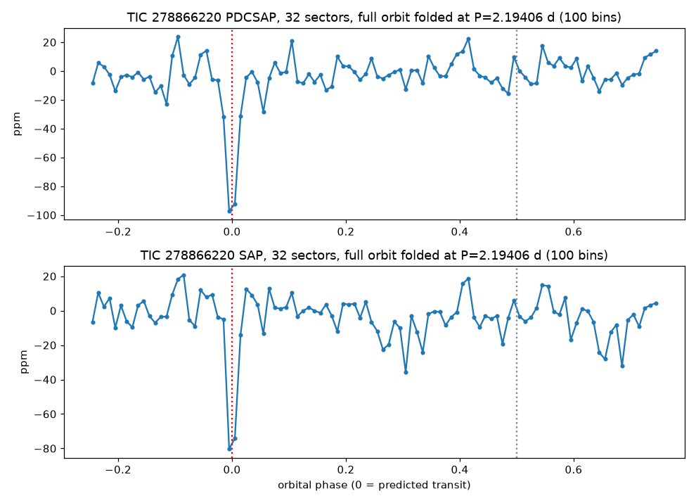
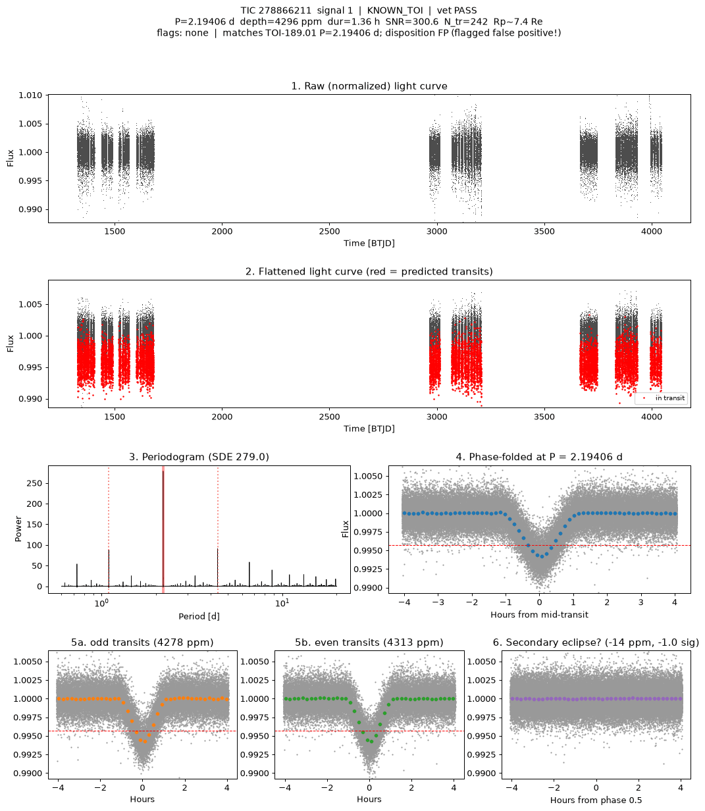

TRANSMISSION #018 ·
Deep dive on TIC 278866220: the dip belongs to the eclipsing binary next door
Follow-up on TIC 278866220, from the fourth sector 88 draw.
The batch search found a 106 ppm dip every 2.194 days at a signal-to-noise of 7.6, below the usual bar of 10. TESS has watched this star, an F-type star about 6,550 K and 2.5 times the Sun's size, for 32 sectors. TLS on all of them found the same period again, much more strongly: 2.19406 days, 76 ppm, signal-to-noise 20, a detection score of 81, 299 transits. Folded over the whole orbit it's one sharp, lonely dip, and it shows up in every year of data.

The shape was the first warning. Each dip lasts about 1.5 hours. A planet crossing the middle of a star this size on a 2.2-day orbit should take about 5 hours, so this would have to be a near-miss graze along the star's edge.
The neighbour check settled it. TIC 278866211 sits 65 arcseconds away (about three TESS pixels) and is about two magnitudes fainter. It would only need to dim by 0.08% to produce our signal. Its own light curve drops by about 0.43% every 2.19406 days, at the same moments (the predicted times agree to within 10 minutes), with a signal-to-noise near 300. That star is TOI-189, which the TESS team marks as an eclipsing binary and the follow-up working group lists as a false positive. A little of its light falls into TIC 278866220's aperture, and its eclipses come along with it.

Marked probably false positive: the signal comes from the eclipsing binary next door. The deep search also turned up a faint 37 ppm signal at 3.42 days with a signal-to-noise of 7.7. The fold is mostly scatter, so it's logged as too weak to count.
Every signal, explained (2)
Tap a row to open it. Sorted by signal strength.
TIC 278866220#1Passed the robots, failed the eyeball 2.194 d · 76 ppm · SNR 20.2 · ~2.3 R⊕
This one got through every automatic check, which is rare. Then Kepler looked at it by eye and followed it up, and it didn't hold up.
Kepler’s eyeball check: SNR 7.6 below 10, 1 h duration far too short for a 2.46 Rsun star (central ~5.3 h); deep TLS (results/deep_TIC278866220, 32 sectors) recovered P=2.19406 d SDE 81 SNR 20 at 76 ppm; neighbour TIC 278866211 (Tmag 10.26, 64.7 arcsec, needs 0.08%) shows the same period and phase at 4068 ppm SNR 278 = TOI-189.01 (TESS disp EB, TFOPWG FP) -> contamination from a known eclipsing binary next door; actual folder results/deep_TIC278866220 (batch_folder=results/deep so the Kepler Log matches deep runs)
TIC 278866220#2Passed the robots, failed the eyeball 3.422 d · 37 ppm · SNR 7.7 · ~1.6 R⊕
This one got through every automatic check, which is rare. Then Kepler looked at it by eye and followed it up, and it didn't hold up.
Kepler’s eyeball check: second signal of the deep search, SNR 7.7 below the ~10 bar, SDE 11.1 peak barely above the forest, fold mostly scatter, odd/even 46 vs 27 ppm; 37 ppm on a Tmag 8.2 star that already picks up a known eclipsing binary (TOI-189, TIC 278866211) -> too weak to count; actual folder results/deep_TIC278866220 (batch_folder=results/deep so the Kepler Log matches deep runs)
Candidates table
| TIC | # | Status | Vet | P (d) | Depth (ppm) | Dur (h) | SNR | SDE | N | R⊕ | Flags |
|---|---|---|---|---|---|---|---|---|---|---|---|
| 278866220 | 1 | NEW_CANDIDATE | PASS | 2.1941 | 76 | 1.49 | 20.2 | 81.1 | 299 | 2.3 | - |
| 278866220 | 2 | NEW_CANDIDATE | PASS | 3.4218 | 37 | 1.44 | 7.7 | 11.1 | 190 | 1.6 | - |
Diagnostic plots
 TIC 278866220 #1 · Passed the robots, failed the eyeball
TIC 278866220 #1 · Passed the robots, failed the eyeball TIC 278866220 #2 · Passed the robots, failed the eyeball
TIC 278866220 #2 · Passed the robots, failed the eyeballFull pipeline report
Planet-hunter report
Generated 2026-11-02 13:15 UTC by hunt.py v1.0.0.
Stars processed
1 stars total: 1 done
Signals found: 2 (2 new and passing vetting, 0 new but failing vetting, 0 matching known planets/TOIs/CTOIs).
New candidates that passed the automatic checks
These are the ones to look at first. Passing the automatic checks does not make something a planet. Open each plot and follow the eyeball checklist in BOT_BRIEF.md before telling anyone about it.
| TIC | # | P (d) | depth (ppm) | dur (h) | SNR | SDE | N tr | Rp est (Re) | flags | note | plot |
|---|---|---|---|---|---|---|---|---|---|---|---|
| 278866220 | 1 | 2.19406 | 76 | 1.49 | 20.2 | 81.1 | 299 | 2.34 | - | no catalogued planet/TOI on this star | png |
| 278866220 | 2 | 3.42178 | 37 | 1.44 | 7.7 | 11.1 | 190 | 1.63 | - | no catalogued planet/TOI on this star | png |
New signals that failed vetting
Usually eclipsing binaries, stellar variability or instrument noise. Worth a glance, rarely more.
none
Signals matching something already catalogued
A good sanity check: if the pipeline recovers known planets, it is working.
none
Stars with errors
none
Caveat
A NEW_CANDIDATE here is only a candidate. Most automatic detections in TESS data turn out to be eclipsing binaries (often a nearby star blended into the same pixels), stellar activity or systematics. Confirming a planet needs pixel-level checks, follow-up photometry, and usually spectroscopy. Promising, carefully checked signals can be shared on ExoFOP (as a CTOI) or with Planet Hunters TESS.